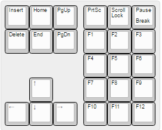
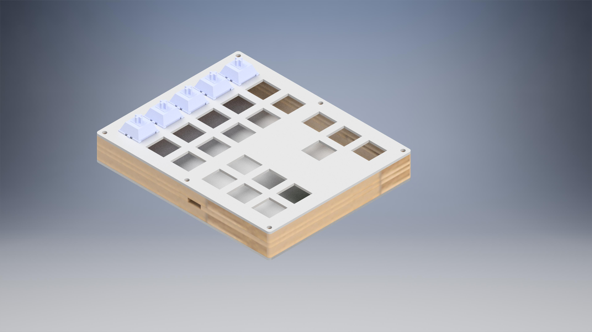
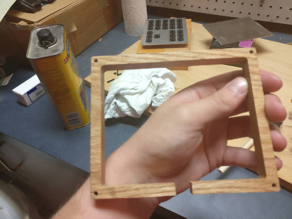
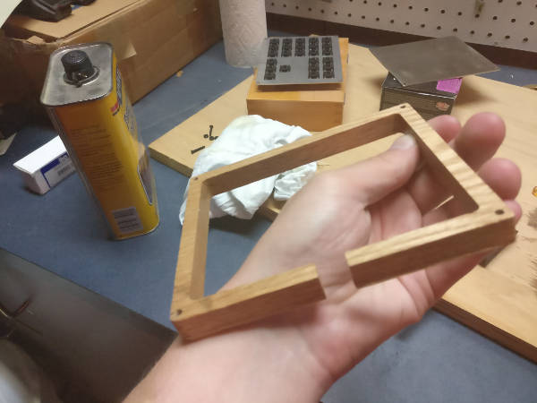
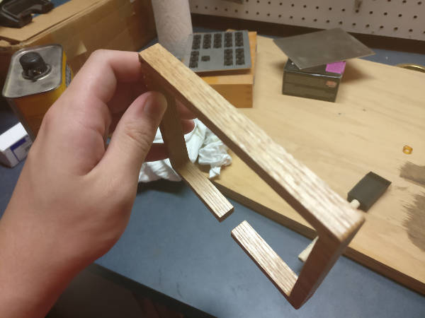
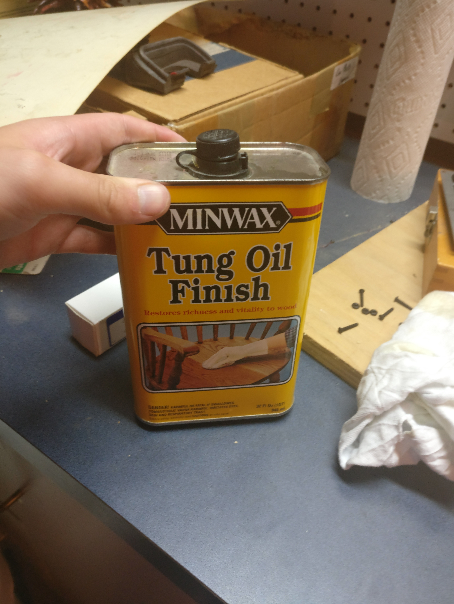
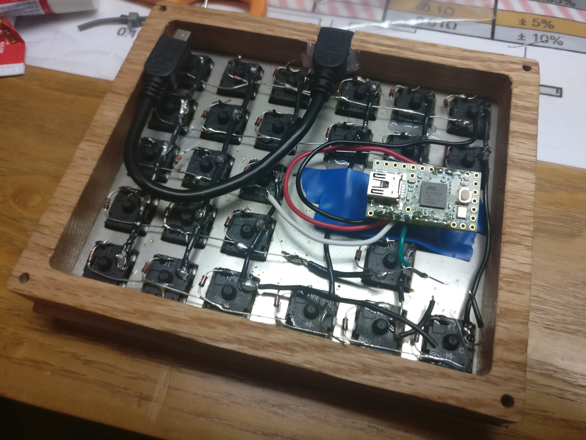
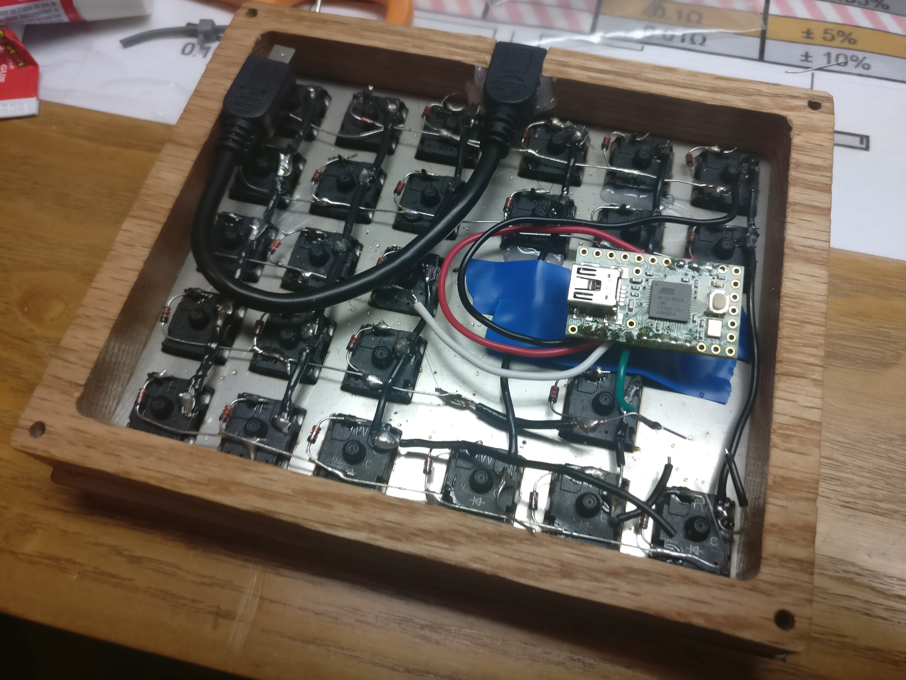
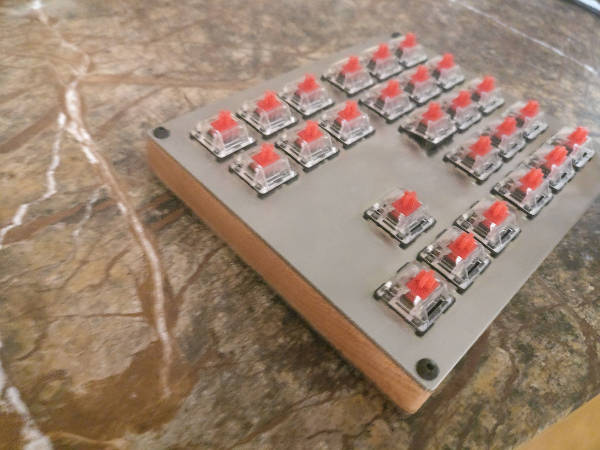

Maeve Stites
Electrical and Computer Engineering B.S.,
Olin College of Engineering.
Searching for full time, impact driven, engineering or data science role.
Background
My goal for this project was to design a macropad to better accommodate my needs than available devices. I wanted something with more keys so I could have more shortcuts in productivity programs I used often: video editing, photo editing, CAD. I also wanted the keypad to integrate well with Team Fortress 2, which was the game I played competitively at the time.
Layout
Initial Design with Commands
Final design
The second design has the same commands, it is just flipped. I flipped it so I could easily access the arrow keys with it on the right side of my mouse.
Design
I used the amazing online plate and case builder swillkb to build a sandwich style case. The top and bottom plates were aluminum, with a wooden middle. I used a CNC router to cut the middle piece.
Front
Back
Parts
- 1.5 mm Brushed Aluminum (top and bottom)
- Oak wook .5” thick
- Gateron Red Switches
- Teensy 2.0
- 6 in mini usb male to female (for rear port)
- 3/4 in 4-40 screws and nuts
- Adhesive rubber feet (from amazon)
- Keycaps from my DSA rainbow set
Machining
Plates
Originally I planned to use the CNC mill at my school and cut 1/16” aluminum (Slightly too thick per the switch spec, but there are many reports that it should work) with a 1/16” bit. This was going to be a stretch from the getgo because the radius on a 1/16” bit is greater than the cherry specification. However, someone broke the last 1/16” bit so I never got to try this idea.
By this point, I was already pretty engaged with the idea and decided to order my plates through lasergist where I could get them cut per spec out of 1.5mm aluminum. It was not cheap, costing around $60 with shipping for the key plate and bottom plate. However, their finished side looks very nice and everything clips in place nicely.


Mid-Plate
I cut my mid plate out of 1/2” oak with a CNC router (1/8” bit). The mid plate is relatively simple, just with four holes for the mounting holes at each corner. I actually really struggled to source wood for this part. In the end I swung by my local Home Depot and saw .5” oak and decided it would have to work.
Overall, I am happy with the way this piece turned out. The edges and the holes line up well with the aluminum, even though I did not have the aluminum plates with me while sanding. The only thing that I would want different would be a cut out in the rear for the mini usb connection which is not the whole height (as this design will have gaps). However, I did not have a good way to work around this with my tooling. One option would have been to make two separate pieces and glue them together, but I determined the gap around the connector to be better than having a seam all the way around.
  Staining
I debated quite a bit about what I wanted to do with the wood. In the end I just finished it with some linseed oil.
Assembly
I used the Keyboard Firmware Builder (http://kbfirmware.com/) to give me a quick wiring diagram as well as generate the firmware. It also allowed me to choose which ports every column and row went into on the Teensy. It was pretty straight forward, just make sure the diodes are facing the right way and make sure there are no shorts. A multimeter was very helpful during this process to reassure me that I had done things correctly.
I recommend you put more thought into the bending of the diodes than I did, because I made my first row way harder than it had to be by not bending the diodes correctly. I also recommend using solid wire on the columns, as I found it easier to strip in the middle than the stranded.
The only issues I had during assembly, other than the minor diode issue, was I had one short between a column and a diode, which was quickly fixed with some electrical tape (I accidentally burnt through the insulation on the wire).
I do not have a lot of in progress photos for this, since I was so excited, but I will attach what I have.

 

In the last photo, you can see that I just glued the mini usb cable to make a port. It feels pretty secure and seems to work well. I used a combination of hot glue and super glue to make it more secure.
I also had to glue in a few of the switches as they were not clipping in right.
I placed electrical tape underneath the Teensy to avoid shorting on the aluminum plate.
Final Product
Do not worry, I went back and fixed that popped up switch with some hot glue! It was pushed up by one of the wires going to the Teensy, I do not know why it would not clip into place.
Overall, I am pleased with the final product and am excited to use it! I do not have key caps as of yet, but I ordered some of the x-key relegendables from bhphotovideo.
I had originally planned on using some of the signature plastics dsa relegendables, but they are $2 a cap, so I thought I could do better. Hopefully the x-keys are of decent quality.
I plan to use this for some TF2 bindings for competitive 6v6 (Change classes, change loadouts, start and end demo, etc).
I have some people who are interested in a macropad for art. So I may be looking into cutting costs by reducing the cost of machining the plates and other components.